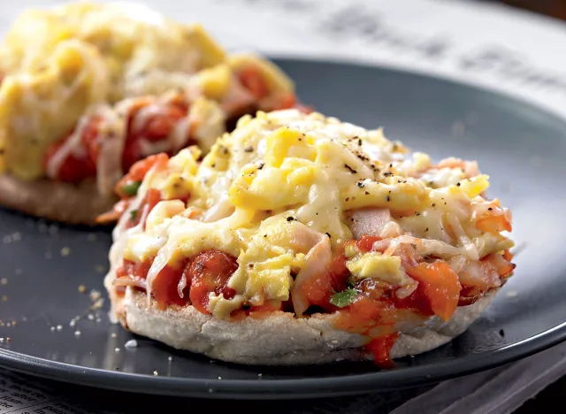

Recipe for Breakfast-Pizza
Fancy some pizza for breakfast we have got you covered, inspired by mexican flavours this easy to make dish will get your day on track

Required ingredients
- 1/2 Tsbp Butter
- 6 eggs, beaten
- Salt and black pepper to taste
- 4 oz ham, cut in thin strips
- 4 whole wheat or multigrain English muffins, split and lightly toasted
- 1 cup prepared salsa
- 1 cup shredded low-fat Jack or Cheddar cheese
How to make it
- Preheat the broiler.
- Heat the butter in a large nonstick pan.
- When the butter is fully melted, season the eggs with salt and pepper, then add to the pan,
along with the ham strips.
- Cook, using a wooden spoon or rubber spatula to keep stirring the eggs as they set.
- Remove the pan from the heat about 30 seconds before the eggs are fully done
(they'll continue to cook in the pan and in the oven).
- Slather each English muffin half with a good spoonful of salsa.
- Divide the eggs among the English muffins, then top with the cheese.
- Place all the English muffins on a baking sheet and broil (6" from the heat is ideal)
until the cheese is fully melted and browned around the edges.